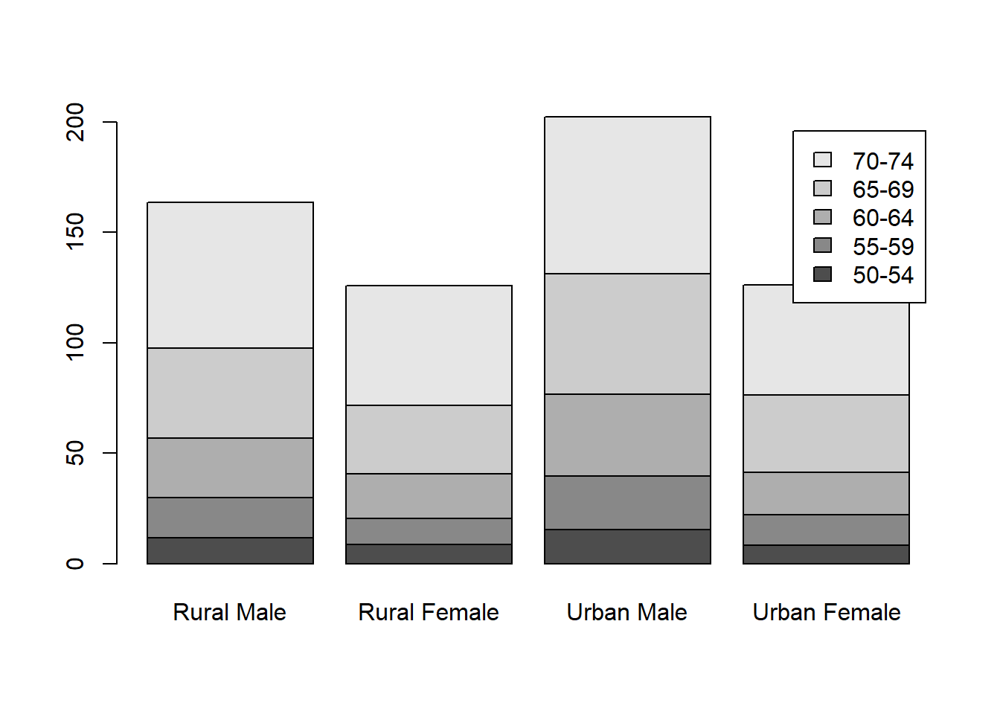
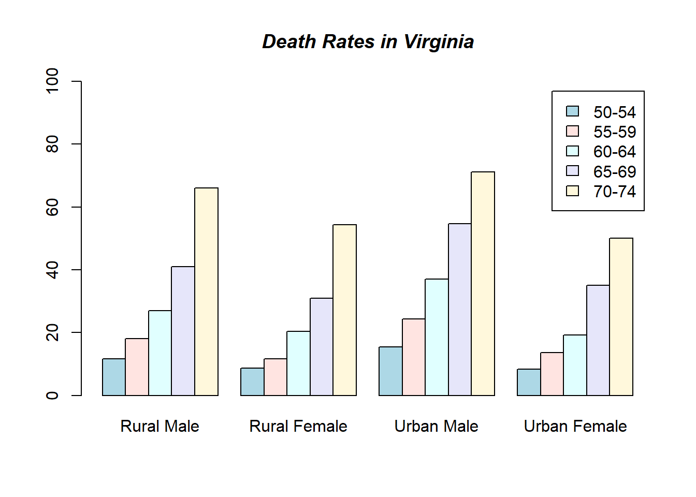

v <- c(42, 92, 39, 19, 12, 16, 2, 0, 8.5, 50, 4,
13, 0, -4, 9, 10, 0, 3, NA, 32, 28, 7, 11,
-3, 8, 74, 70, 12, 20, -1, 6.7, NA, 6, 3,
-1, 1, 0, NA, 42, -0.2, 17, 3.1, -5, 11, 1,
51, 46, 2, 51, 13, NA, 0, 30, -5, 9, NA)Question 1
Continuation of question 2
Use the summary tool and see how can you answer the previous questions without any trouble.
Use summary only on companies with higher market value than the market value mean (of all companies)
Use rescale to create a new column named marketvalue.rescaled in the forbes2000 data. (use the package scales)
Use
cut()to create the column marketvalue_cat, so you will have 3 categorical bins of “Low”, “Medium” and “High” for the marketvalueCreate histograms for profits, assets and sales and see the differences
Question 2
Copy and run the following vector:
Print five-number summary using one function, and afterward analyze the result.
Bonus question! That is for those who want to go further beyond!
- From the built-in data set VADeaths, create a bar plot with a legend of the age groups.
you should get:

- In addition, unstack the bars and plot them alongside one another, adding to each age group color and a proper title.
you should get:
